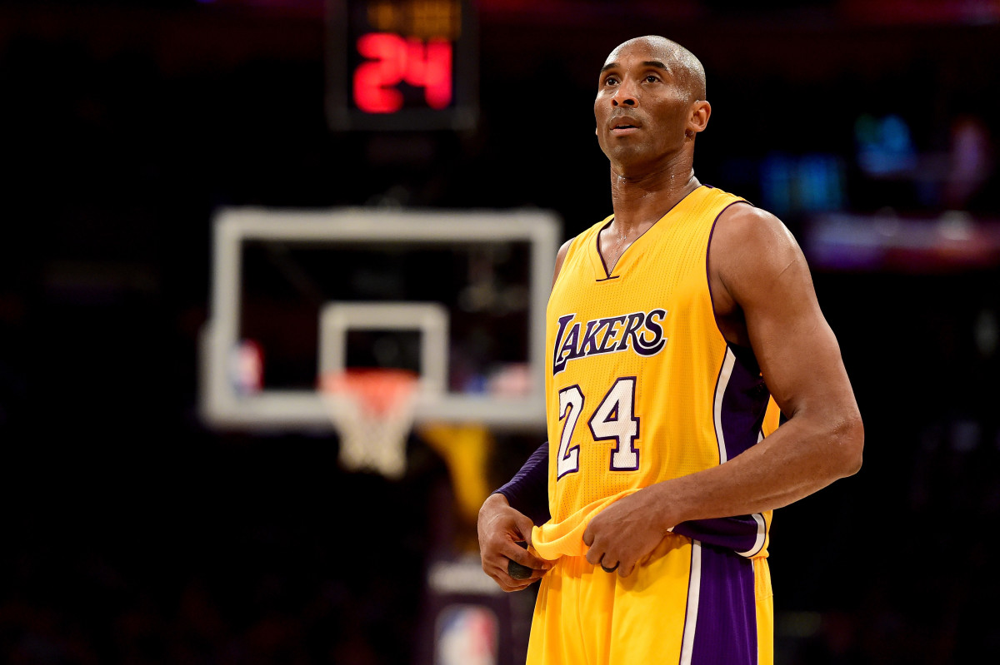

Kobe Bean Bryant

https://www.biography.com/.image/c_limit%2Ccs_srgb%2Cq_auto:good%2Cw_700/MTcwMDIzMzg3MjQwODY3NDAx/gettyimages-521051018.webp
Kobe Bryant during his final NBA game on April 13, 2016 at the Staples Center in Los Angeles, California. He scored 60 points against the Utah Jazz.
American professional basketball player. A shooting guard, he spent his entire 20-year career with the Los Angeles Lakers in the National Basketball Association.
The Path of the Black Mamba
- (1996) Drafted and traded - With the 13th pick in the 1996 NBA Draft, the Charlotte Hornets selected Kobe Bryant, the teenage phenom from Lower Merion High School in Philadelphia. He’d earned four state championships in four years, but his stint with the Hornets wouldn’t last nearly as long. They traded him to the Los Angeles Lakers for Vlade Divac. At age 17, Bryant was still considered a minor. His parents had to cosign his three-year, $3.5 million rookie contract.
- (1997) Slam Dunk Contest Champion - Bryant was 18 by the time All-Star Weekend rolled around. He didn’t make the team, but he did participate in the Rookie Challenge, and he won the Slam Dunk Contest. Bryant barely made it out of the contest’s opening round. He only scored a 37, slightly higher than Ray Allen’s 35. But he clinched the title in the second round with a near-perfect score. Bryant had 49. Chris Carr had 45. Michael Finley managed 33.
- (1999 - 2002) Phil Jackson arrives and the three-peat - The Lakers had been a playoff team with Bryant and Shaquille O’Neal, but they hadn’t quite reached championship form. The furthest they’d made it was to the conference finals. That all changed when Phil Jackson arrived. Jackson had already won six league titles with the Chicago Bulls. He’d twice won three in a row. Bryant and Shaq helped him accomplish it a third time. The Lakers knocked off the Indiana Pacers in 2000, Philadelphia 76ers in 2001 and the New Jersey Nets in 2002 for the NBA crown. To this day, this was the last time a team won three straight titles.
- (2004) Fallout with Shaq - Bryant and O’Neal had butted heads since they first teamed up in 1996. Shaq took issue with the style of basketball Bryant played, labeling him “selfish” and a “show off.” Bryant didn’t like the way O’Neal conditioned himself for the season and disproved of his antics when he wanted a higher salary. They held it together during their championship runs, but the cracks showed more than ever when they fell short against the Detroit Pistons in the 2004 NBA Finals. That summer, the Lakers declined to retain Jackson as head coach. O’Neal demanded a trade and was sent to the Miami Heat for Lamar Odom, Caron Butler and Brian Grant. The very next day, Bryant re-signed with the Lakers for seven years and $136 million.
- (2005) Phil Jackson returns - The Lakers hired Rudy Tomjanovich to replace Jackson as head coach. He signed a five-year deal, but he wouldn’t stay in the role long. He made it through 41 games before resigning due to poor health. Frank Hamblen took over as interim in 2005, but only made it through the remaining 39 games. The Lakers missed the playoffs with a 34-48 record. Then, the Lakers turned to a familiar face: Phil Jackson. Bryant and Jackson’s second tenure ran more smoothly than the first. In December of that year, Bryant scored an astonishing 62 points in the first three quarters against the Dallas Mavericks. At the start of the final quarter, the Mavs only had 61 points. As impressive as that scoring outburst was, Bryant outdid it just a month later.
I don't want to be the next Michael Jordan, I only want to be Kobe Bryant.
- (2006) Career-high 81 points - On Jan. 22, 2006, Bryant scored a career-high 81 points against the Toronto Raptors. It’s the second-highest points total in a single game in league history. Wilt Chamberlain set the record with 100 points in 1962. Bryant shot 26-of-46 from the field, including draining seven from beyond the arch.
- (2008) Olympian - The United States Men’s Basketball team suffered a humiliating finish in the 2004 Summer Olympics in Athens, Greece. Despite being the overwhelming favorites to win the gold medal, the squad only earned the bronze. That changed when Bryant joined the squad ahead of the 2008 Summer games in Beijing. In eight games, Bryant averaged 15 points. He erupted for 13 points in the final quarter of the gold-medal game against Spain, which the Americans won 118-107.
- (2008 - 2010) Return to championship form - Bryant was already a three-time champion, but he had never won one without Shaq. O’Neal had gone on to win another title in Miami. And the supporting cast Bryant had played with since O’Neal’s departure was never nearly as talented. But when the Lakers traded for Pau Gasol in February 2008, Bryant’s fortunes changed for the better. The Lakers went on to finish 57-25 and advanced all the way to the NBA Finals. In the end, the Boston Celtics won the series, 3-2. But it was the last time anyone would best Bryant in the finals. The next year, the Lakers knocked off the Orlando Magic for their 15th title, Bryant’s fourth. And in 2010, the Lakers outlasted the Celtics to win Game 7, 83-79. It was Bryant’s fifth and final championship ring.
- (2012) Final Olympic medal - Bryant donned the red, white and blue for the final time in 2012. He won his final gold medal at the 2012 Summer Olympics in London. At 33, he was an aging star. But he still saw minutes in all eight games and helped the Americans run the table again. This time, he averaged 12.1 points per contest.
`
Everything negative - pressure, challenges - is all an opportunity for me to rise.
- (2016) ‘Dear Basketball’/Retirement - Bryant spent the rest of his career chasing a sixth NBA title, which would have tied him with Michael Jordan. But injuries plagued him his final few seasons. On Nov. 29, 2015, Bryant published a poem in The Players Tribune, titled “Dear Basketball.” In it, he announced that he would be retiring at the end of the season. On April 13, 2016, Bryant played in his final NBA game. But it wasn’t a declining star’s melancholy limp across the finish line. Bryant came to play. He scored a season-high 60 points in the Lakers’ 101-96 win over the Utah Jazz.
- (2017) Jersey retirement - On Dec. 18, 2017, the Lakers retired Bryant’s jersey numbers. He’d worn No. 8 until 2006, when he changed to No. 24. He’d first worn 24 in high school before changing to 33.
- (2018) Oscar - In April 2017, Bryant made an animated short film out of his “Dear Basketball” poem. The following March, he added another trophy to his collection. “Dear Basketball” won the Oscar for Best Animated short Film at the 90th Academy Awards. The film also took home a Sports Emmy and the Annie Award that year.
- Jan. 26, 2020 - Kobe, 41, is among nine people who die in a helicopter crash in Calabasas. One of his daughters, 13-year-old Gianna “Gigi” Bryant, was among those to perish in the crash as well.
You can browse Basketball-reference or this nba.com to learn more about him.